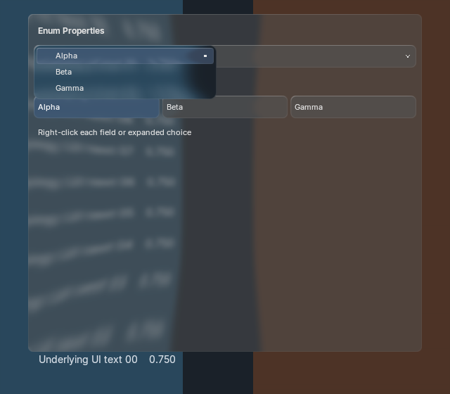
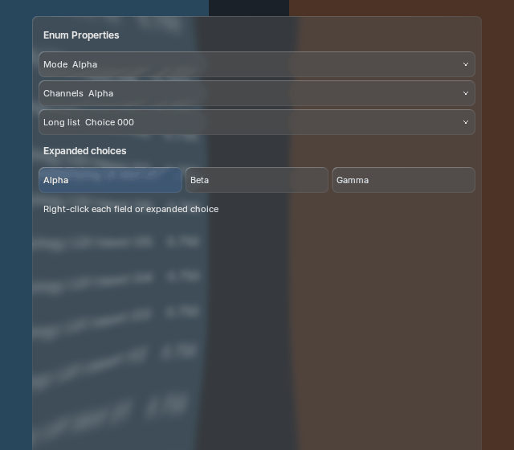
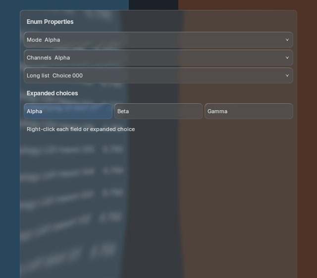
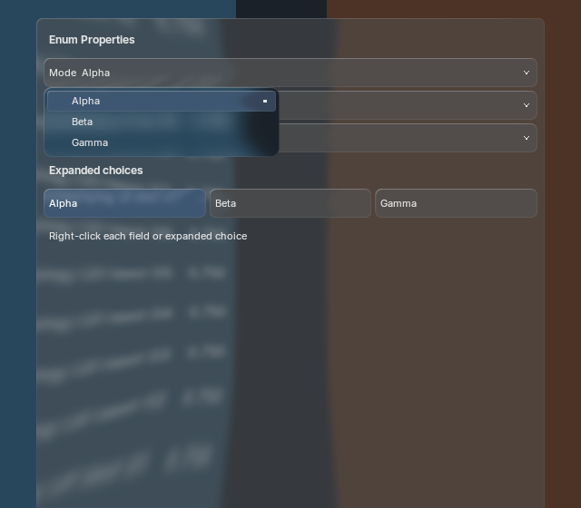
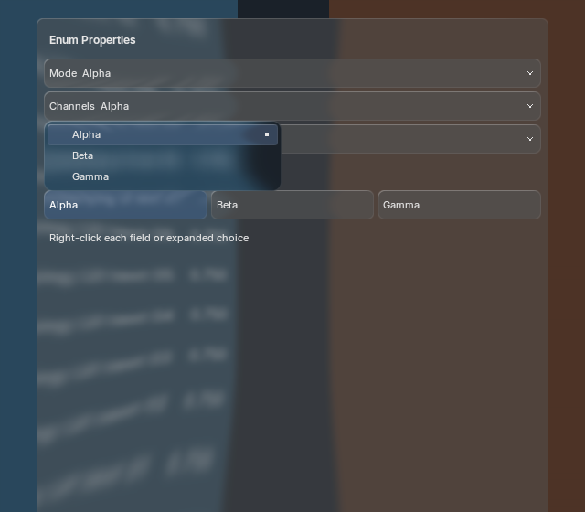
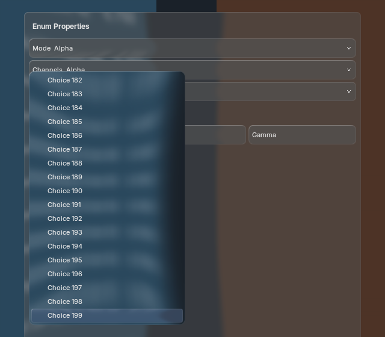
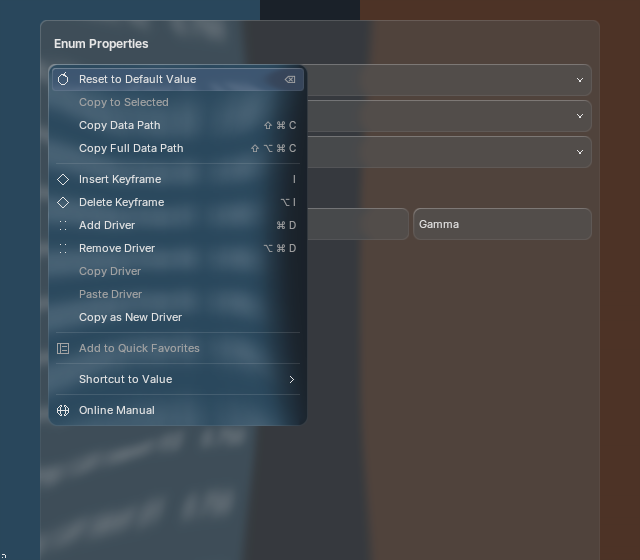
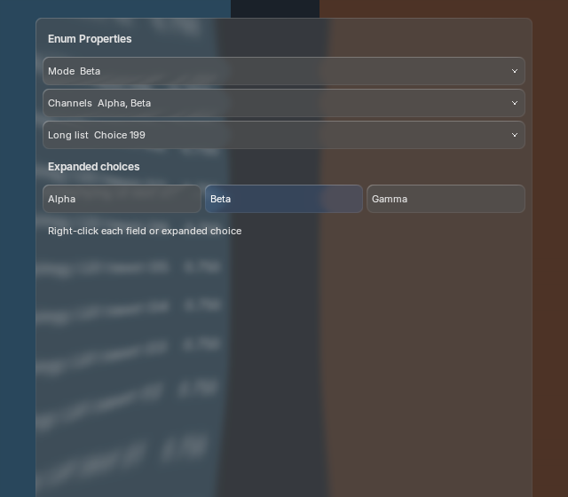

Scalar enum clicks now open the same BVT strong-glass menu as shortcuts and context actions. Flag menus stay compact. Expanded choices and menu selections share rollback when a host commit fails. Dynamic choices refresh on opening and are rechecked at selection; stale choices and concurrent value changes are rejected.

100 motion frames per scale on Blender 5.1.2 and 5.2.2 match with native text batching enabled/disabled (600 frames total). Images display at a constant logical width; click for raw pixels. Large menus paint only visible rows and keep ordinary field typography.







Same three-choice scalar and three expanded buttons, 20 warmups and 100 CPU submission samples per workload. Pixel comparison and before/after timing records are included. Resting pixels match; open-menu position intentionally moves below the field. These are process-level regression checks, not GPU latency or source-equivalent BVT speed claims.
Real window input verifies the 200th choice via End/Enter, current-choice reveal, exact property right-click routing, cancellation and quiescent teardown. One shared backdrop production, one blur, five offscreens and retained font/shader/batch identities stay stable through the capture sequence. No new generated artwork or visual approval is claimed.
Parity remains partial. Native Shift/multi-toggle persistence, headings/separators, every icon variant, fuzzy popup search, specialized tab semantics, full focus traversal and broader theme/platform validation remain open. Blender 4.2 fallback is retained but not executed. Tyler owns visual QA.
5.2 captures and timings · 5.1 captures and timings · RNA cases · Real window input · Integration and exact remaining gaps